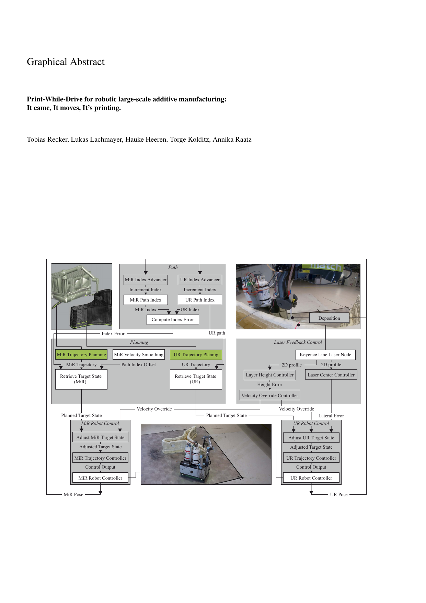
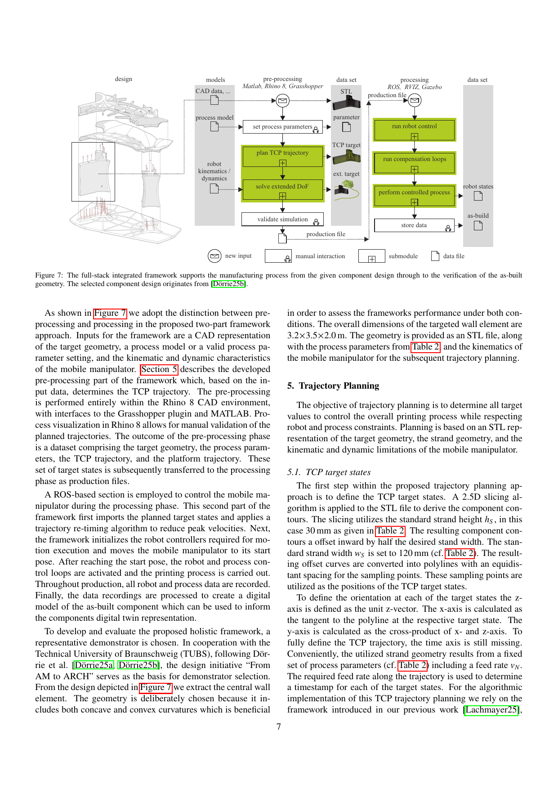
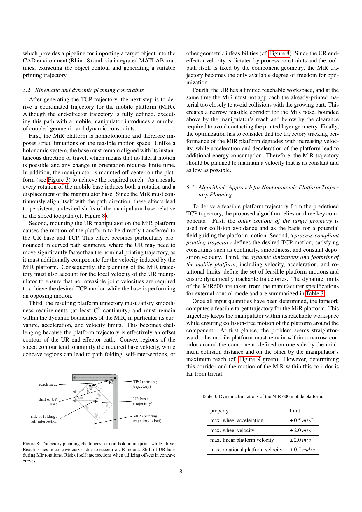
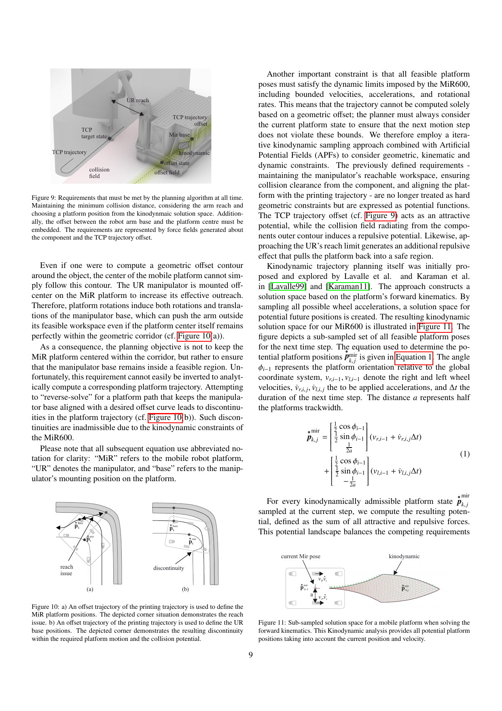
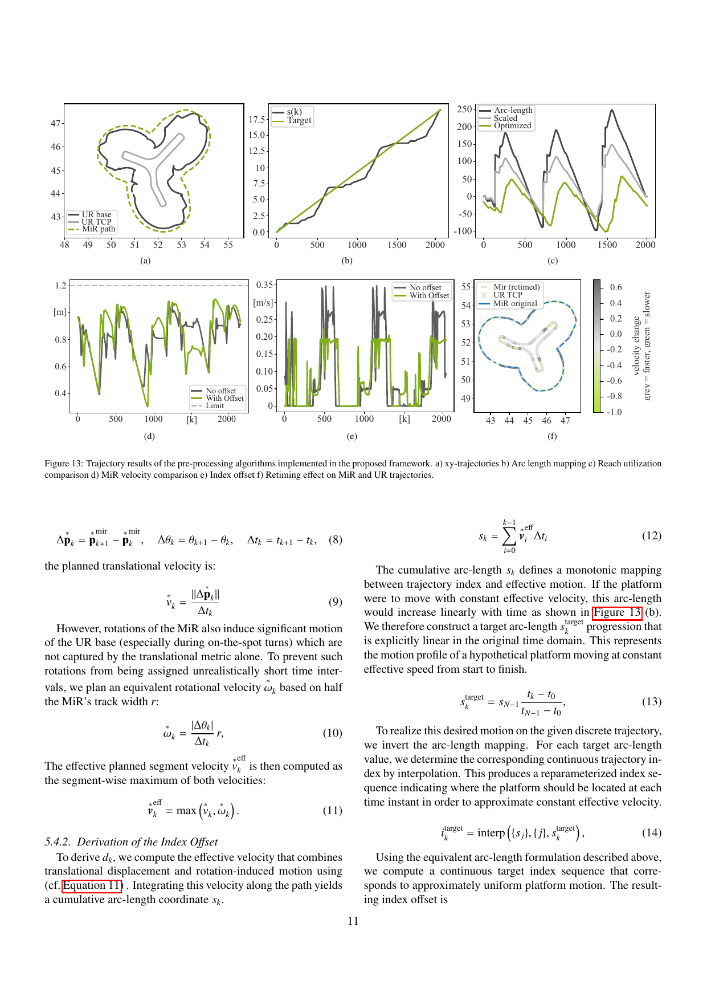

Coupled trajectory planning
A planning approach for TCP and mobile base motion that respects collision avoidance, reachability, nonholonomic motion, and process constraints.
It came, it moves, it’s printing.
Institute of Assembly Technology and Robotics, Leibniz University Hannover

This work investigates trajectory planning, motion control, and compensation strategies for mobile robotic additive manufacturing in motion. Instead of repeatedly stopping and repositioning, the system performs uninterrupted large-scale deposition while the mobile platform keeps moving.
The study centers on a polyurethane foam structure of roughly 3 × 4 × 2 m and extends the workflow to coordinated multi-robot fabrication, including reinforcement and post-processing operations.
Print-while-drive can fabricate structures larger than the static workspace of a single printer while avoiding repeated interruptions and segment boundaries.
A planning approach for TCP and mobile base motion that respects collision avoidance, reachability, nonholonomic motion, and process constraints.
A coordinated MiR/UR control architecture for continuous print-while-drive operation with constant-process execution in mind.
Laser-based feedback for geometric referencing and disturbance compensation during fabrication of large-scale components.
A full-stack pipeline from CAD input to executed robotic fabrication.

CAD geometry, process parameters, and robot characteristics are used to generate the TCP trajectory and the extended mobile-platform trajectory.
A ROS-based execution stage imports production files, retimes trajectories, runs robot controllers, and executes the fabrication process.
Recorded data can be processed into a digital representation of the built component, enabling verification and future digital-twin updates.
Selected figures from the paper.



Packages and entry points from the public codebase.
ur_trajectory_followermir_trajectory_followerprint_simprint_hwprint_guiparse_mir_path / parse_ur_pathgit clone https://github.com/match-ROS/match_additive_manufacturing.git
cd match_additive_manufacturing
./setup.sh
source devel/setup.bash
roslaunch print_sim run_simulation_complete.launchUpload the files to a repository named <username>.github.io or to a docs/ folder and enable Pages in the repository settings.
You can replace this with the final BibTeX once the journal metadata is fixed.
@article{recker2026printwhiledrive,
title = {Print-While-Drive for robotic large-scale additive manufacturing: It came, it moves, it's printing.},
author = {Recker, Tobias and Lachmayer, Lukas and Heeren, Hauke and Kolditz, Torge and Raatz, Annika},
year = {2026},
note = {Project page placeholder citation; update with final journal metadata}
}